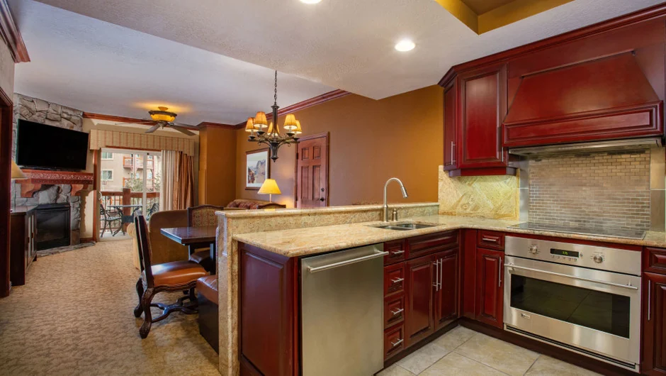

Most Park City ski villas are not rented by the resort that runs the building. They are owned privately. How they are rented varies, and the booking path you choose affects what you pay, who you deal with and how much flexibility you have.

Two models, two booking paths
Two models exist for renting a slopeside villa in Park City. In both cases the unit is a privately owned property inside a resort building. What differs is who stands between you and the person who holds the keys.
An agency-managed rental means the owner has contracted a property management company to list the unit, take bookings, handle cleaning and maintenance between stays, and act as the first point of contact for guests. Many Park City agencies list their units on multiple booking platforms as well as their own websites. The agency earns a percentage of gross rental revenue — typically between 18 and 35 per cent depending on the company and service level — and that cost is factored into the rates you see.
An owner-direct rental means the owner handles all of this themselves. They set the rate, manage the booking, arrange the cleaning and reply to your messages. There is no intermediary and no layer of agency commission in the pricing. The unit may be listed on the owner's own website, in a small number of places or via word of mouth. This is the model our villa uses.
Both are legitimate arrangements. The right choice depends on what the renter prioritises: flexibility and direct communication, or the institutional trust of a known agency and its platform presence. Our guide to booking a Westgate villa direct from the owner covers how to identify a genuine owner listing and what to ask before you send any money.
What a property management agency does
A management agency takes the owner's unit off their hands for the rental period. The agency lists the property, optimises the nightly rate, handles all guest communication, coordinates cleaning and maintenance and manages the check-in process. For an owner who cannot manage these things from a distance, the agency is worth its fee. For the renter, the agency provides the infrastructure of a professional booking: a known company, a customer service team and a formal cancellation policy.
The trade-off is that you are dealing with a team rather than a person, and the agency's cancellation and payment terms are fixed by policy rather than negotiable. If you have a specific question about the unit — what is in the kitchen, whether the balcony gets afternoon sun — the agency answers from its inventory of information rather than from first-hand knowledge.
What owner-direct changes
Renting direct from the owner means dealing with the person who owns the unit. That is a different relationship from dealing with an agency team. Communication is by email or phone, directly with the owner, not routed through a support system. Questions about the unit get answers from someone who stays in it, which is a different quality of information from an agency's standard listing description.
Terms may be more flexible. An owner can discuss dates, early check-in, late check-out or special arrangements in a way that an agency with a fixed policy cannot. Payment terms are agreed directly rather than set by a platform. With no agency commission in the transaction, the rate reflects what the owner wants for the unit.
The limitation is responsiveness: everything depends on the owner. The checks in the next section and in our booking direct guide are what distinguish a reliable owner from one who is not.

The fee question
The fee structure is where the two models diverge most clearly. An owner-direct booking carries the rental rate, the resort fee and the village assessment — the fixed costs that apply to any unit in the building regardless of how it is booked. An agency booking carries those same fixed costs, the agency's management commission folded into the nightly rate, and in many cases a platform booking fee charged to the guest separately.
Park City management companies typically charge owners between 18 and 35 per cent of gross rental revenue. At the lower end, software-led management operations charge less but provide fewer services. At the upper end, full-service agencies charge for everything from pricing optimisation to linen supply. All of that comes out of the rental revenue, and the owner sets their rate accordingly.
| Factor | Owner direct | Management agency |
|---|---|---|
| Who you deal with | The owner | Agency team |
| Management commission | Not in the price | Typically 18–35% of gross, priced in |
| Platform booking fee | None if you book direct | Applies if booked via a platform |
| Communication | Direct, by email or phone | Agency response policy |
| Cancellation terms | Negotiated per booking | Fixed by agency or platform |
| Resort fee and village assessment | Applies | Applies |
The resort fee and village assessment apply to both paths — they are charged per unit per stay by the resort and the village authority, not by whoever takes the booking. Our guide to Park City resort fees and the costs that appear at checkout covers what to ask for upfront so the total is not a surprise.
The villa this guide is about
We own three Premier Two-Bedroom Villas inside Westgate Park City Resort, in Canyons Village. Each is 1,100 square feet — two king bedrooms, two queen sleeper sofas, sleeping eight — with a full kitchen, a kitchenette in the lock-off studio and two bathrooms with walk-in showers.
We rent directly, owner to renter. No platform fee, no agency layer. Our open weeks for 2027 are Presidents' Week, 13 to 20 February, and spring break, 21 to 28 March. One enquiry, one person who answers it.
Booking a direct rental with confidence
A direct rental works as well as the documentation behind it. The key checks are the same whether the villa costs five hundred dollars a night or five thousand: a written agreement covering dates, total price and cancellation terms; payment by a method that leaves a trail; and a conversation with the owner — not just an email — before money changes hands. If an owner cannot answer basic questions about the unit directly and confidently, that is the information you need.
Ask for the all-in total covering the nightly rate, the resort fee and the village assessment, expressed as one number. A single figure is what you need to compare options honestly. Our resort fee guide has the specific question to ask, and our guide to booking direct from the owner covers what should be in the written agreement.
The timing matters too. Peak weeks in Park City — Presidents' Week in particular — book months ahead. Direct owners and management agencies alike face the same constraint: when the unit is gone, it is gone. Our guide on when to book a Park City peak week covers how far out each type of week moves.
Common questions
Is it safe to rent a Park City ski villa directly from an owner?
Yes, with the right checks. Confirm the booking in writing, use a payment method with a paper trail, verify the cancellation terms before transferring any deposit, and ask for the all-in total including every fee and tax. Our guide to booking direct from an owner covers what to ask.
How much more expensive is a property management agency?
Park City management companies typically charge owners between 18 and 35 per cent of gross rental revenue, depending on the company and service level. That cost is factored into the rental rate, and if the unit is listed on a booking platform, platform fees are layered on top.
What do I need in writing before paying a direct-rental deposit?
The check-in and check-out dates and times, the total amount including all fees and taxes, the cancellation terms, the payment method and the person or entity you are paying. These should be in a signed rental agreement, not just an email exchange.
Can I book this villa on a rental platform?
No. We rent directly, owner to renter. There is no platform listing for this villa and no platform fee is added to the rental rate. Enquiries go through the contact form on the homepage.
What is the difference between renting from an owner and a timeshare company?
An owner renting a privately held unit is straightforward: they own the property and you are renting it for a period of time. A timeshare company operates differently, selling fractional usage rights rather than offering short-term lettings. Most Westgate units are individually owned; many are rented privately rather than through Westgate's own rental programme.